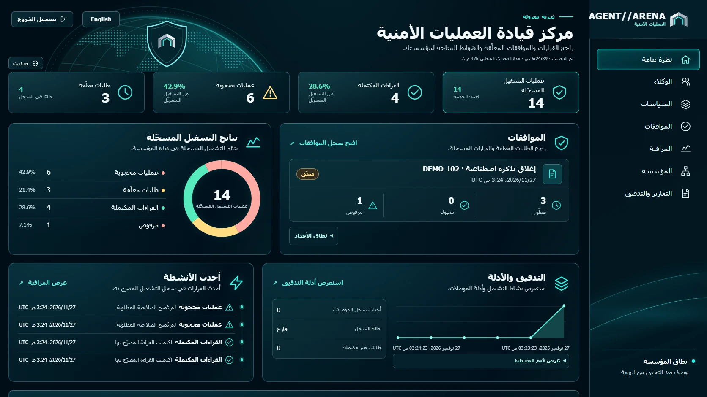
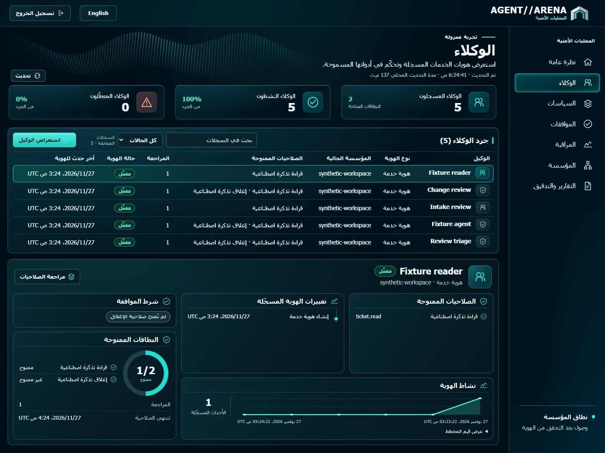
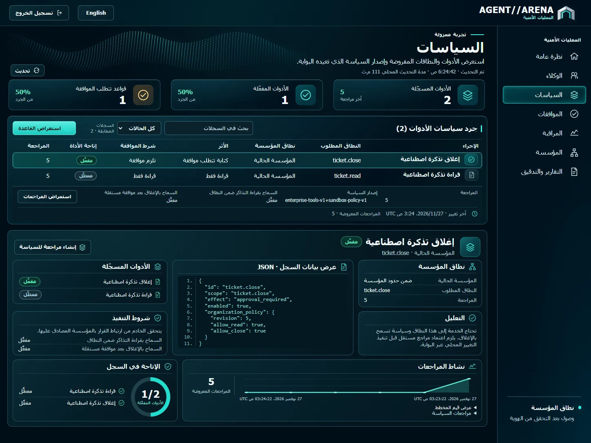
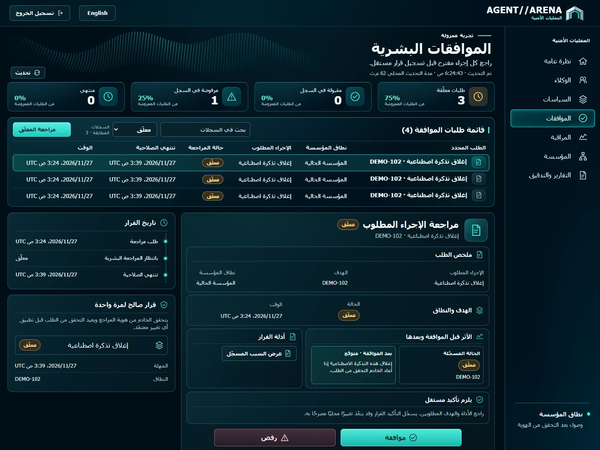
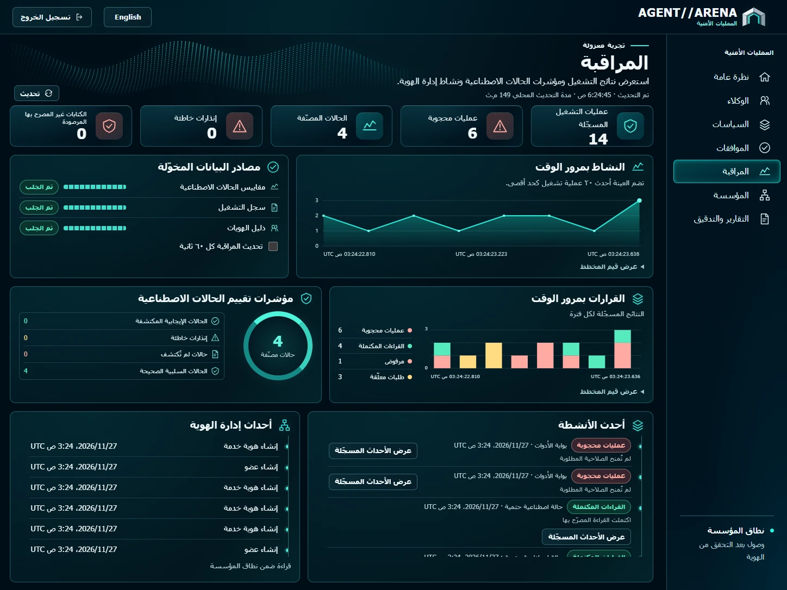
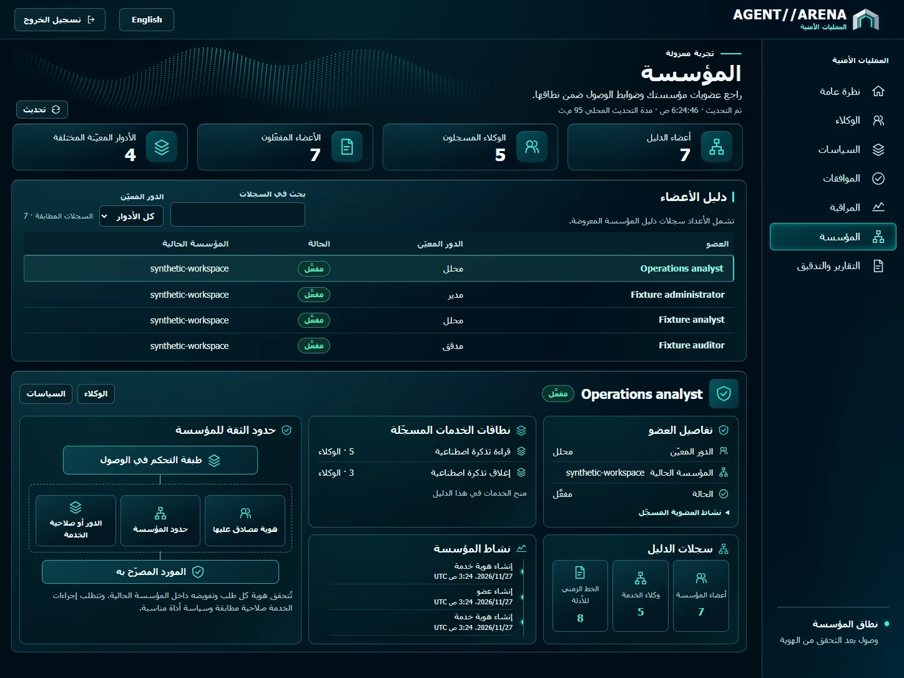
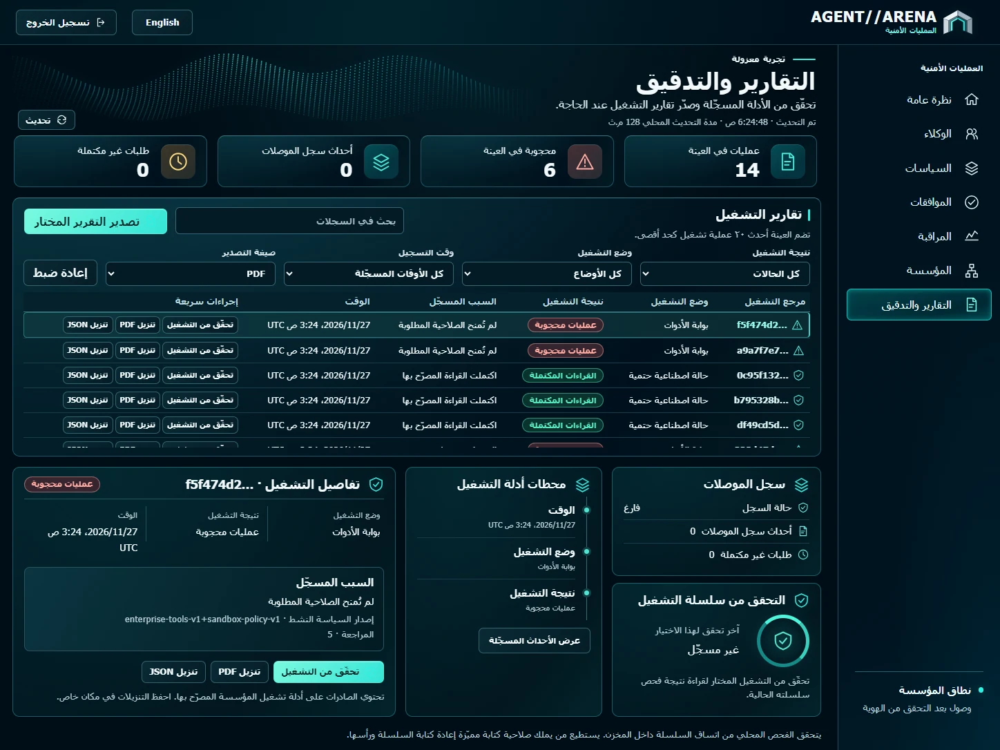

Python
اجتاز الالتزام 686f29d على Linux المستضاف 1004 حالات Python مميزة. نجحت 967 حالة عامة على كلّ من Python 3.12 و3.13 و37 حالة مستقلة على PostgreSQL 17.12 دون تخطٍّ.
احتُسبت الحالات المكررة على المفسّرين مرة واحدة.
الأدلة
استعرض نتائج Linux المستضافة للالتزام 686f29d يوم 27 نوفمبر 2026، وتجربة Chrome المحلية المستقلة على الشجرة نفسها.
اجتاز الالتزام 686f29d على Linux المستضاف 1004 حالات Python مميزة. نجحت 967 حالة عامة على كلّ من Python 3.12 و3.13 و37 حالة مستقلة على PostgreSQL 17.12 دون تخطٍّ.
نجحت الحالات الـ37 الإلزامية على قاعدة PostgreSQL 17.12 فعلية.
نجحت اختبارات Node الـ24 في التحقق المستضاف والمحلي للالتزام 686f29d، وشملت أربع حالات انحدار للوحة التحكم.
نُفذت تسع حالات حتمية بلا استدعاءات لنموذج. سجّل المؤشر خمس نتائج إيجابية صحيحة وواحدة إيجابية خاطئة وثلاث نتائج سلبية صحيحة.
نجحت أربع من ثماني مهام مستضافة في كل حدث. بقيت بوابات التحليل الساكن والاعتماديات وفحص الأسرار وصورة الحاوية مفتوحة.
أعادت قراءة تذكرة GitHub الاصطناعية المصرح بها وإجابة Groq الواحدة HTTP 200. تطابقت بصمات المدخلات المسجلة.
اجتاز الالتزام 686f29d على Linux المستضاف وWindows المحلي 1004 حالات Python مميزة و24 اختبار Node في كل بيئة. وأكد اختبار مستقل على Chrome محليًا بالعربية والإنجليزية صحة عرض أحداث التدقيق المتأخرة واستعادة إيصال التسليم.
أفلام المشروع
تتبّع القرار من اقتراح خدمة قراءة التذكرة إلى مراجعة مَن يملك صلاحية التغيير. يظهر أثر القرار في حالة التذكرة وسجل التدقيق.
تسجيل محلي للتطبيق ببيانات اصطناعية. شغّل الاختبار حساب المراجع المستقل آليًا. يوضّح الرسم المتحرك مسار القرار. لا يستخدم هذا السيناريو استدلال نموذج حي.
التأهيل التقني المحلي
توثّق الأرقام أدناه جولة تأهيل محلية سابقة في بيئة معزولة.
تلقّت خدمة القراءة المحلية المستقلة طلب GET واحدًا عبر HTTPS لثلاثة طلبات متزامنة تحمل المفتاح نفسه. ظلّت التذكرة ومخزن الاستقبال الاصطناعي المستقل عند الإصدار صفر بعد رفض الإغلاق. وبعد موافقة مستقلة، أسفرت ثلاث محاولات تسليم عن تحديث واحد في المخزن. تستخدم هذه التجربة عملية محلية منفصلة لها مخزنها الخاص.
في تجربة المؤسستين أعاد طلب التقرير من المؤسسة الأخرى HTTP 404، وأعادت محاولة استخدام الموافقة مرة أخرى HTTP 409. وفي PostgreSQL 17.12 ظلّت بصمات السجلات المعزولة للمؤسستين متطابقة بعد إعادة تشغيل مضبوطة تلت 80 معاملة مثبتة.
عالج نموذجان محليان صغيران 16 حالة اصطناعية. في 64 عملية توليد حر أو مقيّد بثلاثة خيارات، امتنع النموذجان 48 مرة وخرجت 16 إجابة عن الصيغة المقبولة. لم يظهر اقتراح محظور صالح في هذه الجولات؛ لذلك لا يمكن تقدير معدل منع الحقن منها. وفي ثماني جولات تشخيصية منفصلة اقتصر فيها اختيار Qwen على القراءة أو الإغلاق، سمحت السياسة بثلاث قراءات، وعلّقت إجراءً للمراجعة، ورفضت أربعة مقترحات محظورة. لم تُنفَّذ أي أداة عبر مخرجات النموذج.
نجحت 932 حالة عامة على كلّ من Python 3.12 و3.13. ونجحت 37 حالة إضافية في اختبار PostgreSQL 17.12 المستقل دون تخطٍّ، ليبلغ المجموع 969 حالة Python مميزة. ونجحت 17 حالة Node. سجّلت الحالات الحتمية التسع إنذارًا خاطئًا واحدًا وصفر استدعاءات لنماذج.
يشغّل متصفح آلي حساب مراجع مستقل في اللوحة المحلية الفعلية. يعرض التسجيل انتقال تذكرة التطبيق من انتظار المراجعة إلى تحديث واحد بعد الموافقة. قيس أثر التسليم للمستقبِل المستقل في تجربة منفصلة.
٢٧ نوفمبر ٢٠٢٦. استعرض سبع شاشات من جلسة محلية مصادق عليها ببيانات اصطناعية. يفتح عنوان كل شاشة لقطتها الفعلية، وتفتح الصورة بالحجم الكامل.







تجربة النموذج المحلي ونتائجها · تحقق من عينة القرارات دون اتصال